.png)
[WTS] 매매
국내 · 해외 주문을 하나로,
매매의 모든 순간을 빠르게
투혼 WTS는 일반적인 웹 거래를 지원하는 것을 넘어, 사용자에게 더 폭넓은 선택지를 제공하고자 합니다.
WTS에서는 세 가지 주문 방법 중 본인에게 맞는 것을 골라 이용할 수 있습니다.
1) 국내주식과 해외주식을 한 화면에서 통합 거래할 수 있는 일반 주문
2) 원하는 날짜에 미리 매매를 설정해두는 예약 주문
3) 클릭만으로 주문을 빠르고 효율적으로 실행하는 호가 주문
LS증권의 투혼 WTS에서 편의성에 집중해 설계된 쾌적한 주문 환경을 누려보세요.
언제 어디서나, 간편한 거래를 위한
이 화면이 매매에 부족함이 없는 이유!
| 기능 | 이런 점이 좋아요 |
|---|---|
| 일반 주문 | 한 화면에서 국내주식과 해외주식 통합 매매 지원 |
| 예약 주문 | 일자 또는 기간을 지정하여 사전에 매수 · 매도 주문 예약 접수 |
| 호가 주문 | 호가창 클릭만으로 신속하게 매수 · 매도 및 정정 · 취소 주문 가능 |
| 주문 설정 | 주문확인창, 수량 / 금액 입력 초기화 등 주문 편의를 고려한 세부 설정 제공 |
판단은 신속하게, 실행은 정확하게
01 일반 주문
통합 주문화면에서 국내주식과 해외주식을 모두 거래할 수 있으며, 주문 편의를 위한 추가 설정 기능을 이용할 수 있습니다.
매매종목 선택
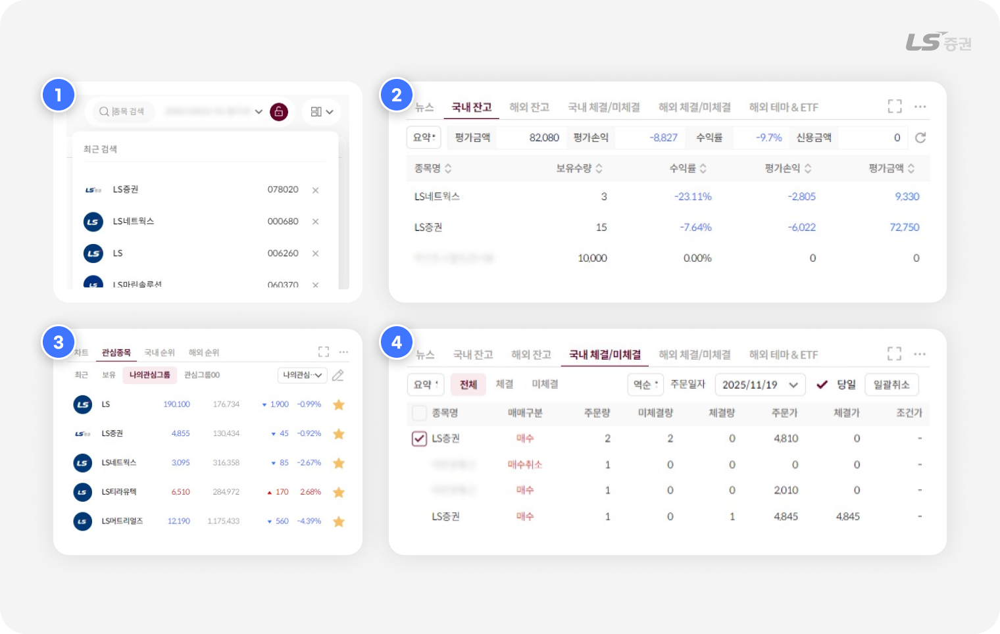
-
1
종목 검색
- 우상단 종목 검색 창에서 국내주식, 해외주식을 한 번에 검색하고 선택할 수 있습니다.
-
2
관심종목, 국내 순위, 해외 순위 등
- 관심종목을 비롯한 국내 / 해외 순위, 인기, 상승률 상위, 하락률 상위 등 당일 화제가 되는 종목을 선택할 수 있습니다.
-
3
국내 잔고, 해외 잔고
- 보유한 잔고에서 거래하려는 주식 종목을 선택할 수 있습니다.
-
4
국내 체결/미체결, 해외 체결/미체결
- 미체결 주문을 선택하여 정정 주문 외 매수, 매도, 취소 주문으로 연결할 수 있습니다.
👉 선택한 종목은 화면 상단에 정보가 조회됩니다. 이제 고른 종목으로 주문을 시작해 볼까요?
매수/매도 주문
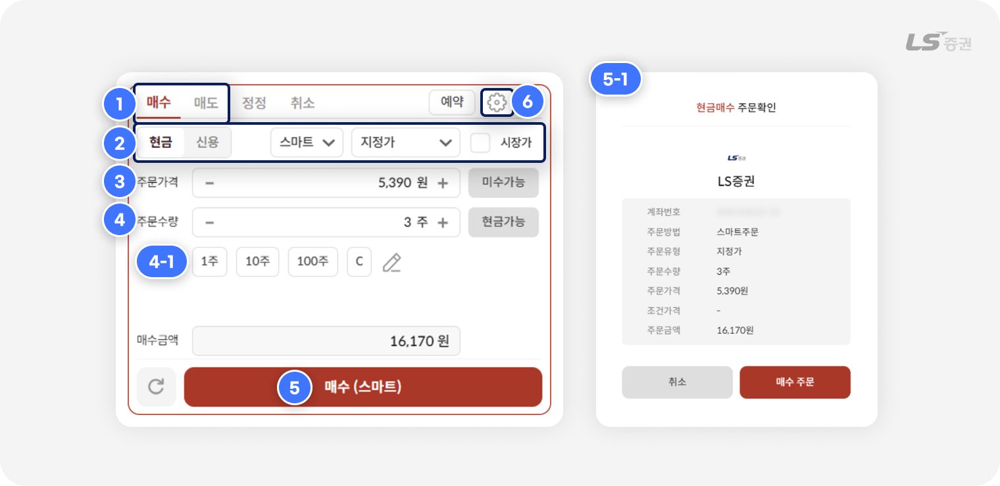
-
1
주문 탭
- 매수/매도/정정/취소 탭이 배치되어 있으며, 탭을 선택하여 접수하려는 주문을 전환합니다.
-
2
결제방법, 거래소, 주문 유형 선택
- 결제 방법을 현금/신용 중 선택하고, 주문하려는 거래소를 스마트 / KRX / NXT 중 선택합니다.
- 스마트는 당사가 정한 최선집행기준(SOR)에 따라 KRX와 NXT 중 한 곳으로 주문을 제출합니다.
- 스마트주문시스템(SOR)에 대한 자세한 설명은 홈페이지에서 확인할 수 있습니다.
- 지정가, 중간가, 시장가 등 주문유형을 선택합니다.
-
3
주문가격 입력
- 가격을 직접 입력하거나, 양측 +/- 버튼으로 가격을 호가 단위로 조정할 수 있습니다.
-
4
주문 수량 입력
- 수량을 직접 입력하거나, 양측 +/- 버튼으로 수량을 조정할 수 있습니다.
-
자주 사용하는 수량 단위(4-1번)을 설정하면 클릭 한 번에 입력할 수 있습니다.
(예 : 10과 100을 순서대로 클릭 시 110주 입력) - 'C' 선택 시 주문수량이 공란으로 초기화됩니다.
- 연필 아이콘 선택 시 자주 사용하는 수량 단위를 변경할 수 있습니다.
-
5
매수/매도 주문 접수
- 주문확인창(5-1번)에서 최종 주문 내역을 확인하면 매수/매도 주문이 접수됩니다.
-
6
설정
- 주문 관련 세부 사항을 설정할 수 있습니다.
주식 주문 유형 정리
| 지정가 | 지정한 가격으로 주문 |
|---|---|
| 중간가 | 최우선 매수호가와 최우선 매도호가의 중간 가격 |
| 시장가 | 주문단가를 지정하지 않고 시장에서 형성되는 가격으로 자동 지정 |
| 스톱지정가 | 직전체결가(현재가)가 지정한 조건단가에 도달할 때 지정한 주문단가로 주문 |
| 종가 | KRX의 당일 정규장 종가를 기준으로 15:30~16:00 사이 단일가 매매 |
| 장전 시간외 | 정규장 시작 전 시간외 거래 (08:30~08:40) |
| 장후 시간외 | 정규장 종료 후 시간외 거래 (15:40~16:00) |
| 시간외단일가 | KRX의 당일 정규장 종가를 기준으로 15:30~16:00 사이 단일가 매매 |
참고해주세요!
상단종목조회 화면에서 거래소를 변경하면 시세 정보만 해당 거래소 기준으로 표시됩니다.
주문화면에서 선택한 거래소는 이에 따라 자동으로 바뀌지 않으며, 시세와는 별도로 작동합니다.
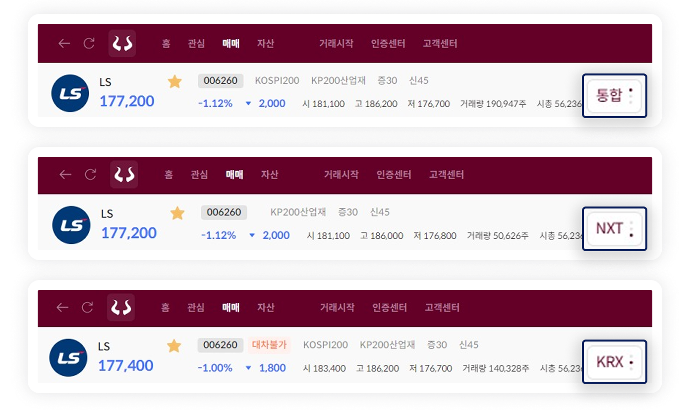
참고해주세요!
종목 옆에 시장경보가 표시되어 있다면 매매 전 특이사항을 꼭 확인해 주세요.
‘투자주의 ‘투자경고’, ‘투자위험’, ‘단기과열’ ‘VI(변동성 완화장치)’ 등과 같이 특이사항이 발생한 종목은 신용거래가 제한되거나 단일가 매매 방식으로만 매매할 수 있는 등, 거래에 제약이 발생할 수 있어요.
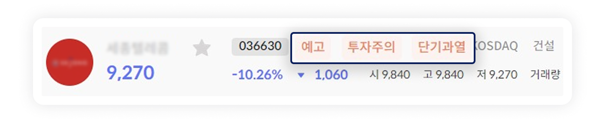
정정 주문
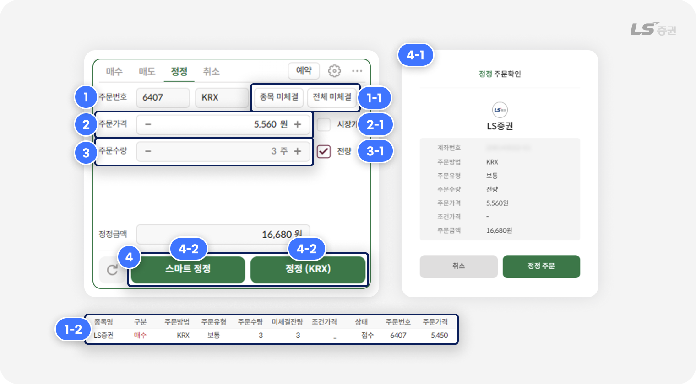
-
1
정정 주문 선택
- ‘종목 미체결', ‘전체 미체결’ 버튼(1-1번)으로 미체결 주문 목록(1-2번)에서 정정하려는 주문을 선택할 수 있습니다.
-
2
정정가격 입력
- 가격을 직접 입력하거나, 양측 +/- 버튼으로 가격을 호가 단위로 조정할 수 있습니다.
- (2-1번) '시장가' 선택 시 가격 입력 없이 주문 시점의 시장가로 정정 주문이 접수됩니다.
-
3
정정수량 입력
- 일부만 정정하려는 경우 수량을 직접 입력할 수 있습니다.
- (3-1번) '전량' 체크 시 선택한 주문수량 전체에 대한 정정 주문을 접수합니다.
-
4
정정 주문 접수
- 주문확인창(4-1번)에서 최종 주문 내역을 확인하면 정정 주문이 접수됩니다.
- (4-2번) 스마트 정정 주문 : 당사가 정한 최선집행기준(SOR)에 따라 KRX와 NXT 중 한 곳으로 주문을 제출합니다.
- (4-3번) 정정(KRX) 주문 : KRX로 주문을 제출합니다.
취소 주문
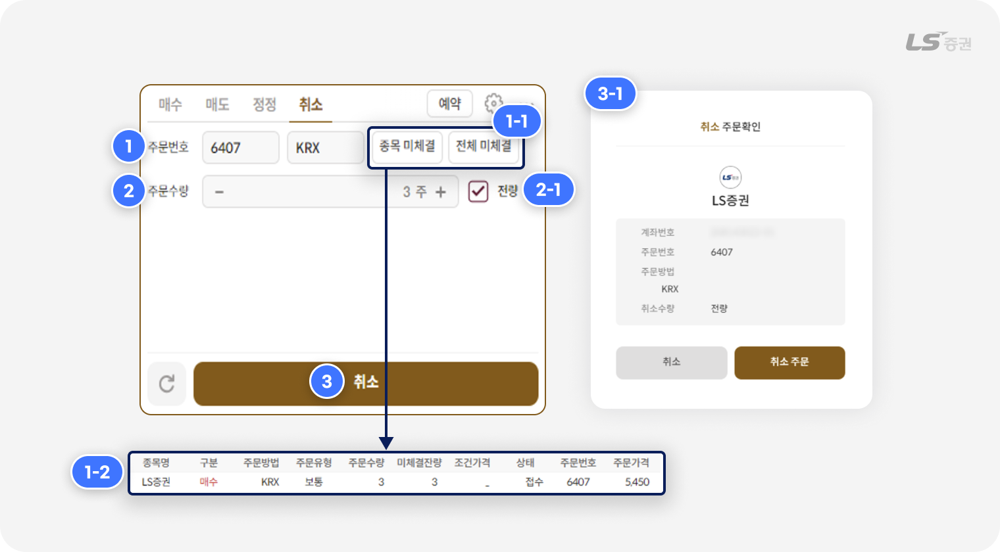
-
1
취소 주문 선택
- '종목 미체결', ‘전체 미체결’ 버튼(1-1번)으로 미체결 주문 목록(1-2번)에서 취소하려는 주문을 선택할 수 있습니다.
-
2
취소수량 입력
- 일부만 취소하려는 경우 수량을 직접 입력할 수 있습니다.
- (2-1번) '전량' 체크 시 선택한 주문수량 전체에 대한 주문을 취소합니다.
-
3
주문 취소
- 주문확인창(3-1번)에서 최종 주문 내역을 확인하면 주문이 취소됩니다.
내일의 거래, 오늘 준비하세요
02 예약주문
일반주문 화면의 우상단 '예약' 선택 시, 원하는 요건으로 일정 시점 또는 기간에 매수/매도 주문이 자동으로 접수되는 예약주문을 설정할 수 있습니다.
매수/매도 주문예약
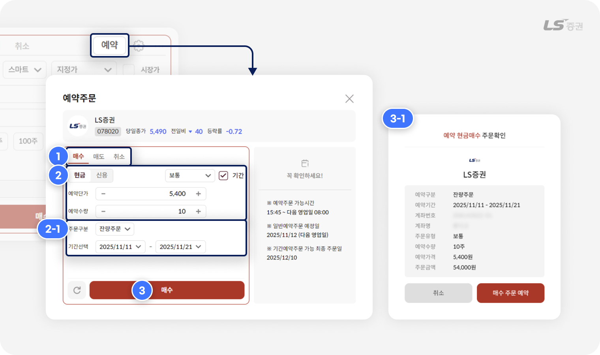
-
1
예약주문 유형 선택
- 매수 / 매도 : 매수주문 또는 매도주문을 예약할 수 있습니다.
- 취소 : 아직 접수되지 않은 예약주문을 취소합니다.
-
2
주문 요건 입력
- 현금/신용, 거래소, 주문유형, 가격, 수량 등 주문 요건을 입력합니다.
- (2-1번) '기간' 체크 시, 일정기간 예약주문에 필요한 주문구분(잔량주문, 지정수량반복)을 선택하고 예약주문이 실행되는 기간을 설정할 수 있습니다.
-
3
매수/매도 주문 접수
- 선택 시 주문확인창(3-1번)을 거쳐 매수/매도 주문 접수가 완료됩니다.
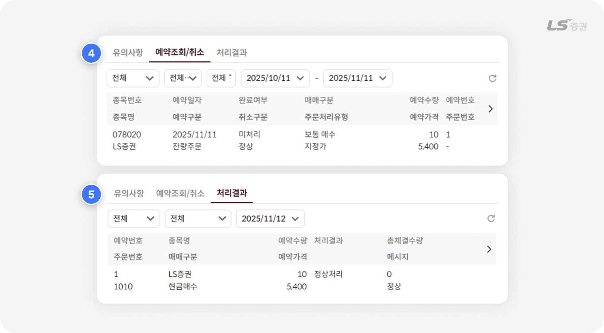
-
4
예약조회/취소
- 예약이 완료되면 예정된 주문내역을 확인할 수 있습니다.
-
5
처리결과
- 예약한 주문이 실제로 접수되면 처리결과에서 주문내역과 체결 경과를 확인할 수 있습니다.
예약주문 취소
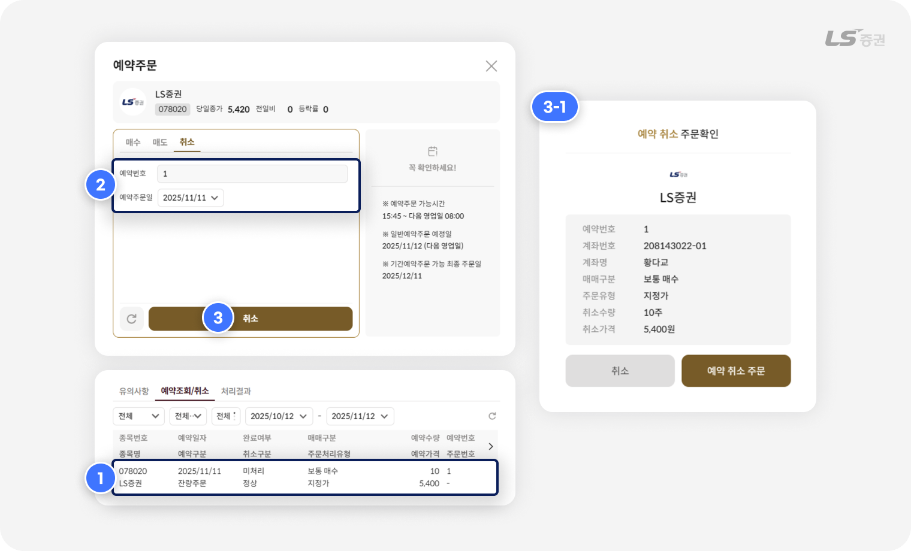
-
1
예약내역 조회 및 선택
- 예약조회/취소 탭에서 취소하려는 예약주문을 선택합니다.
-
2
예약내용 확인
- 취소하려는 예약주문을 확인합니다.
-
3
예약주문 취소
- 선택 시 주문확인창에서 최종 주문 내역을 확인하면 예약주문 취소가 완료됩니다.
잔량주문 vs 지정수량 반복주문
-
잔량주문은 당일 체결되지 않은 주문 수량이 모두 체결될 때까지 다음 영업일로 자동 이월하여 주문합니다.
예를 들어 예약수량이 100주일 경우, 첫날 10주가 체결되면 다음 영업일에 미체결 수량인 90주가 자동 주문됩니다. 이어서 90주 중 20주가 체결되면 그 다음 영업일에 70주가 자동 주문되며, 이러한 방법으로 예약 기간이 종료될 때까지 매일 잔여 수량이 반복 주문됩니다. -
지정수량 반복주문은 일정 기간 동안 같은 수량을 매일 반복해서 주문합니다.
예를 들어 예약수량이 100주일 경우, 예약 기간 동안 매 영업일에 100주씩 주문이 접수됩니다.
참고해주세요!
- 예약주문 가능 시간 : 15:45 ~ 다음 영업일 08:00
- 기간예약주문이 가능한 최종 주문일 : 최대 30일간 (캘린더 기준, 공휴일 포함)
- 신용매수 예약주문인 경우, 신용구분에서 '신용'(유통융자), '대주상환' 중 선택할 수 있습니다.
-
주문 시점에 조건이 충족되지 않을 경우, 주문이 접수되지 않을 수 있습니다.
실제 주문 처리 결과는 '예약주문 처리결과' 탭에서 확인해 주세요.
클릭 하나로 빠르고 편리하게
03 호가주문
주문수량 등을 미리 설정해두고, 호가창에서 클릭만으로 신속하게 매수/매도/정정/취소 주문을 접수할 수 있습니다.
매수/매도 주문
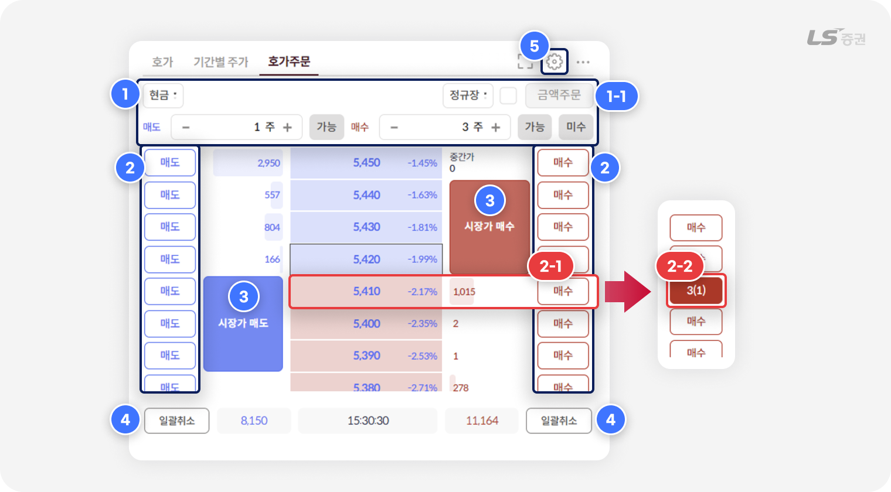
-
1
주문수량/주문금액 사전 설정
-
주문수량 :
매 주문마다 접수되는 매도 주문수량 / 매수 주문수량을 입력할 수 있습니다.
예를 들어 매도 1주, 매수 3주로 설정해두면 매도 주문 시 1주, 매수 주문 시 3주로 접수됩니다. -
주문금액 :
'금액주문'(1-1번) 체크 시, 매 주문마다 접수되는 총 주문금액을 입력할 수 있습니다.
주문 시 총 주문금액과 현재가를 기준으로 주문 수량이 자동 계산됩니다.
-
-
2
매수/매도 클릭 주문
- 원하는 호가 측면의 '매수' 또는 '매도' 버튼(2-1번)을 선택하면 주문이 접수됩니다.
- 주문이 접수되면 주문 버튼에 해당 호가의 누적 미체결 수량과 주문건수가 (2-2번)과 같이 표시됩니다.
- 미체결 수량 선택 시 다른 호가로 정정하거나, 추가주문 또는 주문을 취소할 수 있습니다.
-
3
시장가 매수/매도 주문
- 사전 입력한 주문수량을 기준으로 시장가에 즉시 주문을 접수합니다.
-
4
일괄취소
- 모든 매수 주문 또는 모든 매도 주문을 한 번에 취소할 수 있습니다.
-
5
설정
- 주문 관련 세부 사항을 설정할 수 있습니다.
더 빠르게 주문하는 방법
- 주문 설정에서 '주문확인창 띄우기' 체크를 해제하면 호가주문에서 매수, 매도, 시장가 매수/매도, 일괄취소 버튼 클릭 시 주문확인창 없이 주문이 즉시 실행됩니다.
주의하세요!
-
'주문확인창 띄우기' 체크를 해제하면 확인 절차를 생략하기 때문에,
되돌릴 수 없는 주문 실수가 발생할 수 있습니다. 이 점에 유의하여 신중히 설정해 주세요.
정정 주문
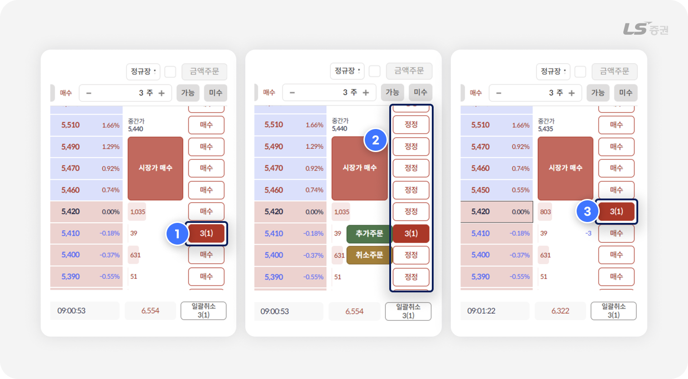
예를 들어 볼까요?
매수주문가를 5,410원 에서 5,420원 으로 정정하는 경우
-
1
기존 미체결 주문 선택
- 매수 주문 호가 영역(5,410원) 우측 매수 버튼 영역에 주문수량 '3'과 주문건수 '(1)'이 표시된 미체결 주문 버튼을 선택합니다.
-
2
정정 호가 선택
- 미체결 주문 버튼 선택 시 매수 버튼이 정정 버튼으로 변경되며, 이 중 정정하려는 호가(5,420원) 측면의 ‘정정‘ 버튼을 클릭합니다.
-
3
정정 완료
- 확인팝업창을 거쳐 정정 전 호가 영역(5,410원)의 주문 수량 표시는 사라지고, 정정 후 호가 영역(5,420원)에 주문 수량 '3'과 주문건수 '(1)'이 표시됩니다.
추가 주문
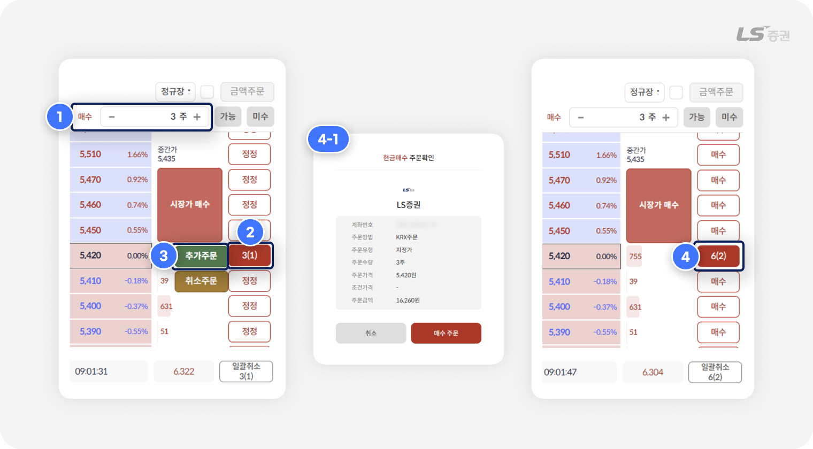
예를 들어 볼까요?
호가 5,420원에 미체결 주문수량 3주가 있고, 동일 호가에 3주를 추가로 매수하는 경우
-
1
주문수량 사전 설정
-
매주문마다 접수되는 매도 주문수량 / 매수 주문수량을 입력할 수 있습니다.
예를 들어 매도 1주, 매수 3주로 설정해두면 매도 주문 시 1주, 매수 주문 시 3주로 접수됩니다.
-
매주문마다 접수되는 매도 주문수량 / 매수 주문수량을 입력할 수 있습니다.
-
2
추가주문 호가 선택
- 미체결 주문이 존재하는 호가 영역 측면에는 매수/매도 주문 버튼에 '주문수량(주문건수)'가 표시됩니다.
- 동일 호가에서 추가로 주문하려는 경우, 호가 우측 미체결 주문 버튼을 선택합니다.
-
3
추가주문
- 미체결 주문 버튼(2번) 클릭 시 표시되는 주문 팝업에서 '추가주문'을 선택합니다.
-
4
추가주문 완료
- 확인팝업창(4-1번)을 거쳐 호가 영역(5,420원) 우측 주문 버튼에 합계 주문 수량 '6'과 주문건수 '(2)'가 표시됩니다.
취소 주문
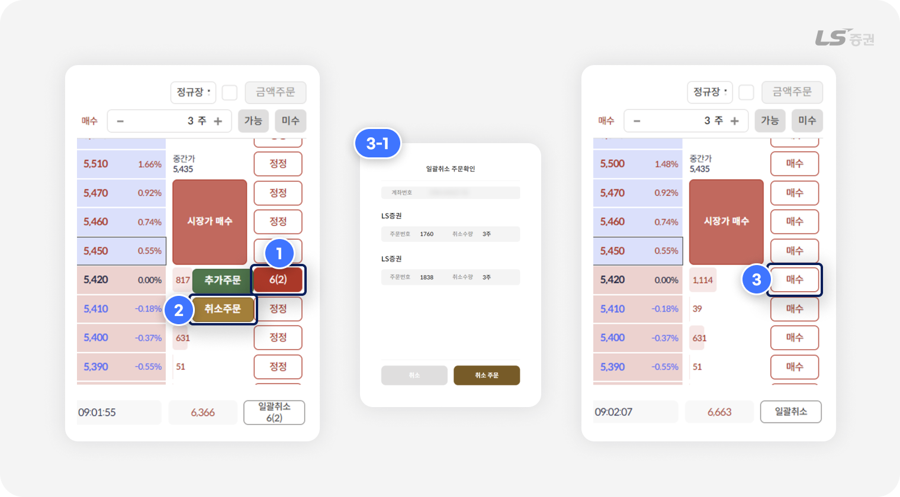
-
1
기존 미체결 주문 선택
- 매수 주문 호가 영역(5,420원) 측면에 취소하려는 미체결 주문이 표시된 버튼을 선택합니다.
-
2
취소주문
- '취소주문' 버튼을 선택합니다.
-
3
취소 완료
- 확인팝업창(3-1번)을 거쳐 취소 전 호가 영역(5,420원) 측면의 주문수량/주문건수 표시는 사라집니다.
여러 건의 주문을 한 번에 취소하려면?
- 빠르게 대응해야 하는 시장 상황에서 일괄적으로 주문을 취소하는 기능이 유용합니다.
- 화면 하단 ‘일괄취소’ 버튼으로 모든 매수 주문 또는 모든 매도 주문을 한 번에 취소할 수 있습니다.
참고해주세요!
- 동일 호가에 복수의 미체결 주문이 존재하는 경우, 주문건별로 개별 취소할 수 없고 일괄 취소만 할 수 있습니다.
알아두면 주문이 더 편리해지는,
04 기타 설정
주문 설정
주문화면 우상단 설정 아이콘에서 주문 시 편의를 위한 각종 설정을 할 수 있습니다.
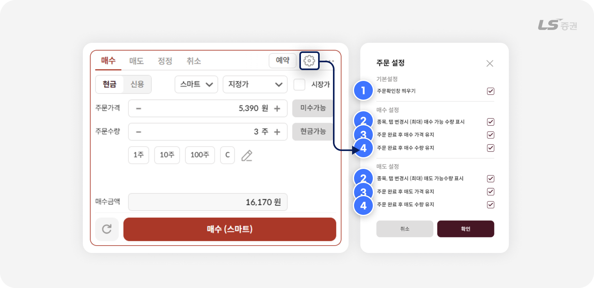
-
1
주문확인창 띄우기
- 체크 시 착오주문 방지를 위해 주문 실행 전 확인창을 표시합니다.
-
2
종목, 탭 변경시 (최대) 매수/매도 가능수량 표시
- 체크 시 종목이나 주문 탭을 변경할 때마다 주문가능수량이 주문수량에 자동으로 입력됩니다.
-
3
주문 완료 후 매수/매도 가격 유지
- 체크 시 주문을 접수한 뒤에도 입력한 주문가격을 삭제하지 않고 유지합니다.
-
4
주문 완료 후 매수/매도 수량 유지
- 체크 시 주문을 접수한 뒤에도 입력한 주문수량을 삭제하지 않고 유지합니다.
분할 영역 전체확대
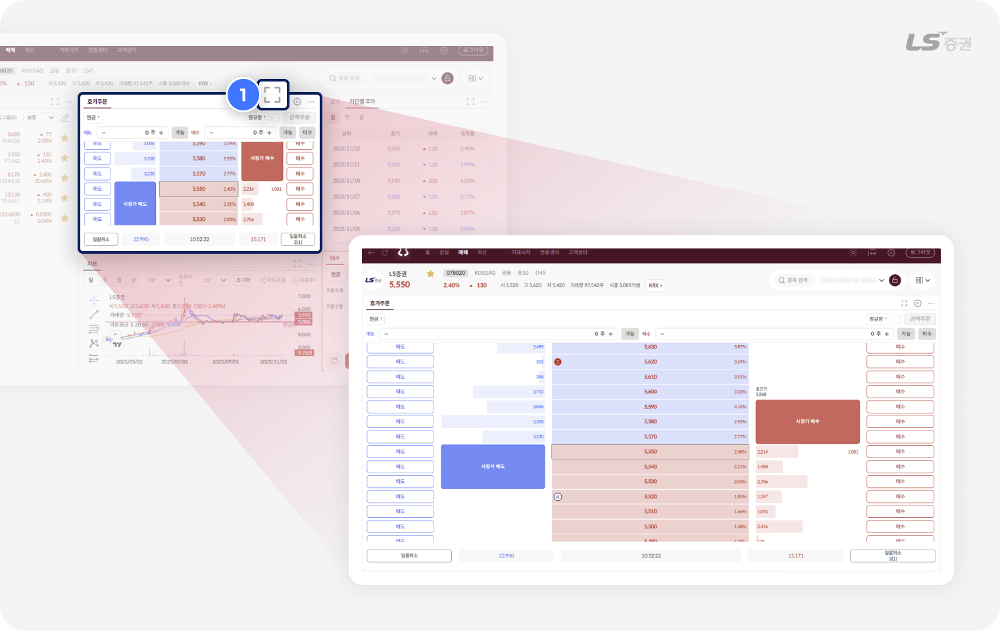
-
1
영역 전체확대 / 화면축소
- 영역 우상단의 전체확대 / 화면축소 아이콘으로 특정 영역을 확대하거나 축소할 수 있습니다.
지금까지 WTS의 주요 매매 화면과 기능을 살펴보았습니다.
직관적인 UI와 높은 접근성을 갖춘 투혼 WTS에서 누구나 쉽고 빠르게 주식을 거래할 수 있었으면 좋겠습니다.
감사합니다!